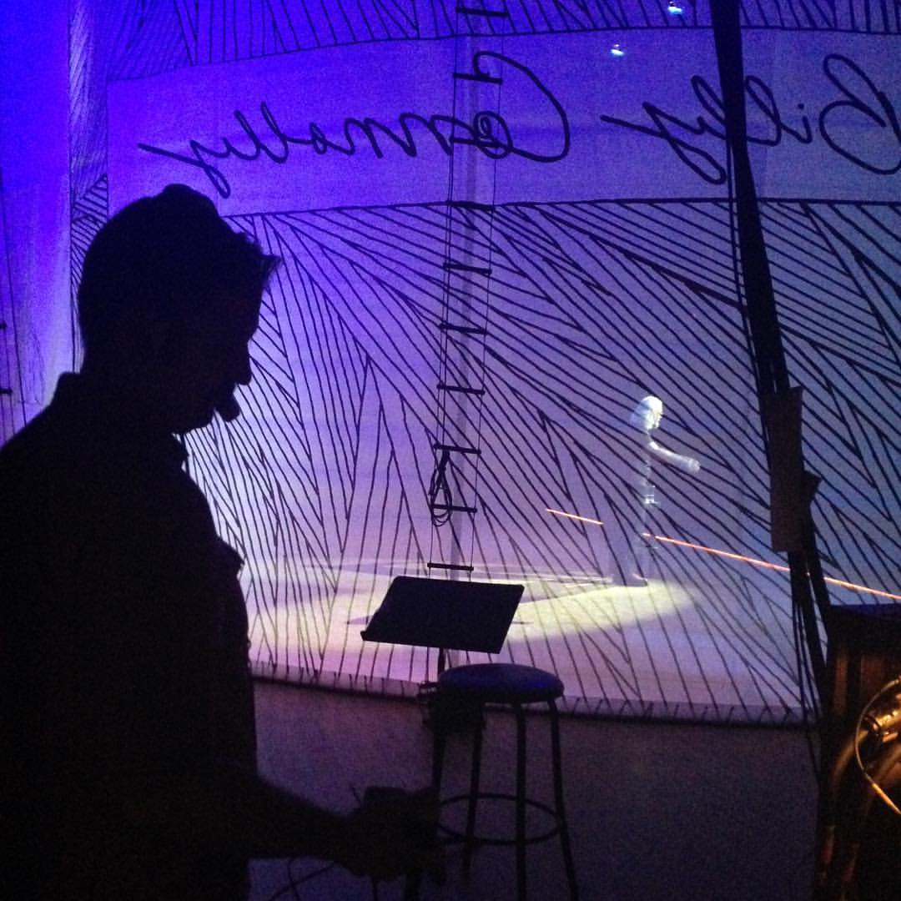
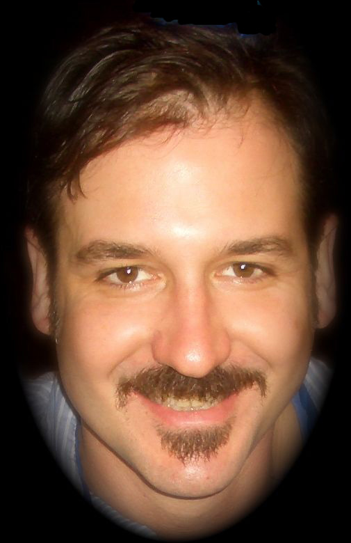
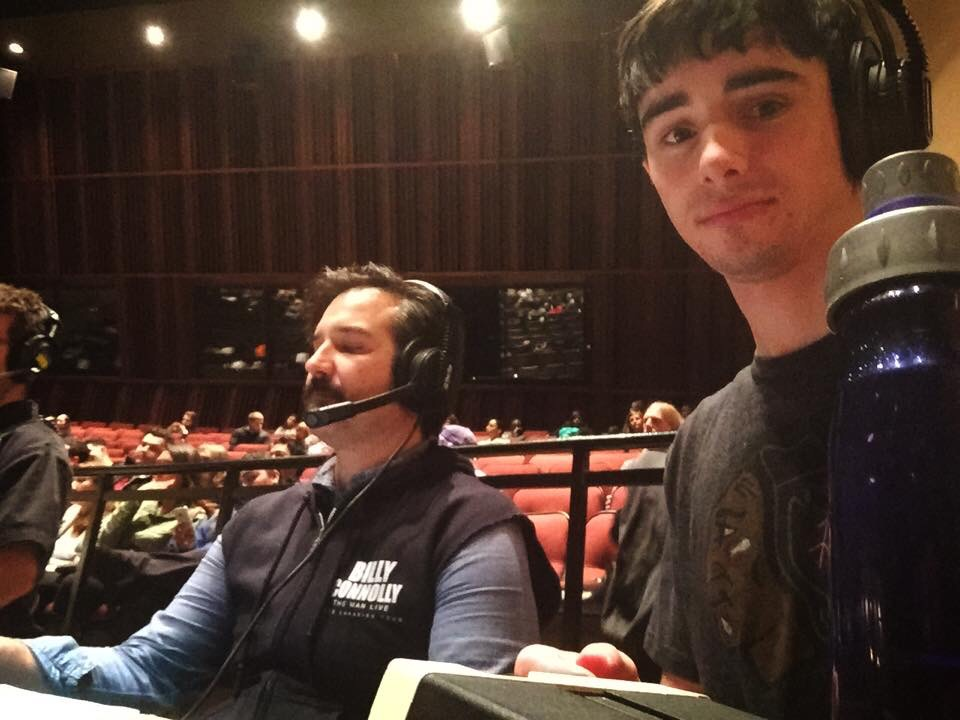
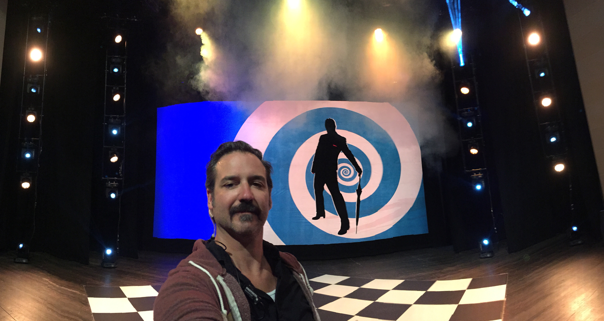

home | past productions | about
   
GREGG BELLON is the Founder of Production Consolidated, a full-service production company based in NYC. With over 15 years experience in professional theater, film, and television, Gregg brings a dedicated holistic approach to theater production, incorporating his eclectic and varied perspectives to each project. Representative credits and projects: Eddie Izzard's "Force Majeure" (US National Tour) and "Stripped" (International Tour); Billy Connolly's "High Horse" (Canadian National Tour), "Too Old to Die Young" (US/Canadian National Tour), and "The Man Live" (US/Canadian National Tour); Matthew Barney's "River of Fundament" (Head of Props, Set Dresser); "The Good Person of Szechwan" (Public Theatre/Foundry Theatre); John Leguizamo's "Ghetto Klown" (US/South American Tour); Henson Alternative's "Stuffed & Unstrung" (NYC/National Tour); "Cactus Flower" (Daryl Roth Productions); Theater Designer of El Teatro Jaco; Technical Director of the New York International Fringe Festival (2005-2012); Technical Director of 37Arts Theater Complex (2005-2007).